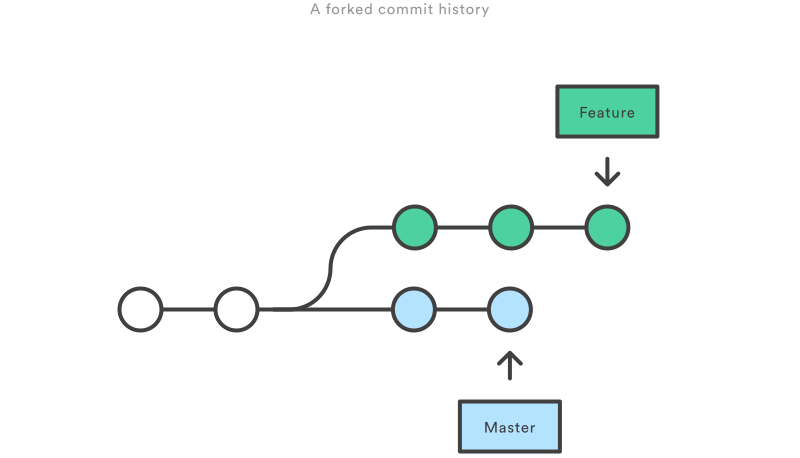
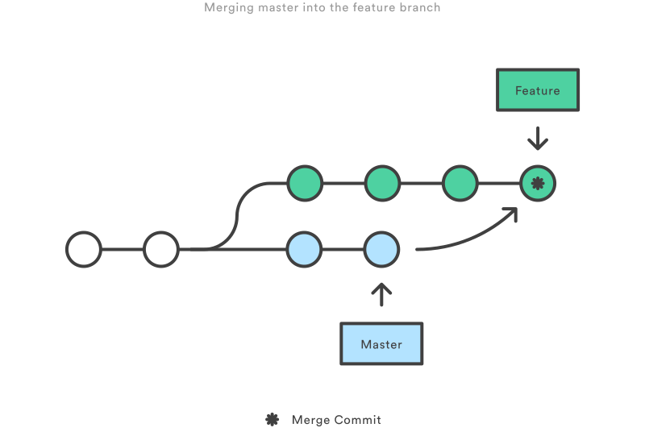
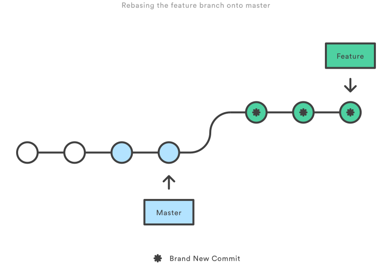
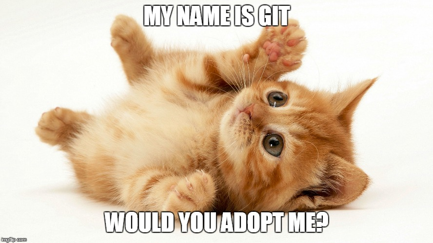

Git basics
Learn a bit about Git during this live coding session
https://github.com/cdue/git-basics-presentation
Created by Cédric Dué / @cedricdue with reveal.js
What is Git?
Git is a VCS (Version Control System).
Not a local one, like RCS.
Not a centralized one, like CVS or SVN.
It's a distributed one, like Mercurial.
Created from 2005 by Linus Torvald and the Linux dev community to replace the VCS they were using for Linux kernel (BitKeeper).
Git VS older VCS
Compared to CVS, SVN... Git is:
- harder
- better
- faster
- stronger

Almost...
Git VS older VCS
Compared to CVS, SVN... Git:
- is distributed
- works offline
- is faster
- repositories are much smaller
- branches are easier to use and less heavy
- branches carry their full commits history
- is less prone to repo corruption (high integrity thanks to SHA-1 usage)
- don't use incremetal version numbers (SVN do) but hashes.
Git VS older VCS
Compared to CVS, SVN... Git:
- doesn't store data as "deltas" between 2 versions
- stores data as a stream of full repo snapshots on every commit
- provides a set of powerful tools
Basic worflow
The 3 states
- commited
- modified
- staged
Basic worflow
The 3 states

Command line or GUI?
Obviously: command line
If you want to take full advantage of git commands.
Or you can use GUIs (Eclipse plugin, Smart Git, or whatever).
If you want to use basic commands in a nice looking way.
Main workflows
You can work with Git in many ways.
Here are some commonly used workflows.
But you can pick up the best of each and mix it to fit your needs.
Find more info about workflows on:
https://es.atlassian.com/git/tutorials/comparing-workflows/
Centralized
Mostly, looks like SVN workflow.
But brings some of the Git power.
- Single branch used (master)
- Conflicts are managed by:
fetching from remote / rebasing / pushing - Linear history
Feature branch
- 1 feature = 1 branch (with explicit name)
- Multiple developers can work on the same feature
- Work in progress do not disturb main codebase
- master contains official/production-ready code
- Easy CI on master branch
- Pull request ready
Gitflow
- Strict and robust branching model
- Based on Feature Branching working
-
Adds specific branches for specific actions:
- master = production release history (tags)
- develop = features integration
- release = production release build (+ feature fix)
- hotfix = quick production maintenance patches
See original description of this worflow by Vincent Drissen:
http://nvie.com/posts/a-successful-git-branching-model/
And really good branching tools:
http://danielkummer.github.io/git-flow-cheatsheet/index.html
Gitflow

Forking
- No centralized repo
-
Every developer owns 2 local repositories:
- a public server one
- a private client one
- Developers push to their local server
- Developers can pull from official server
- Project maintainer can pull from dervelopers repos
- Project maintainer (only) can push to the official repo
- Secure workflow
- Ideal for open source projects
Forking

Branch Per Feature
Described by Adam Dymitruk, this workflow is a bit more "confidential" but it brings some new ideas:
- Features are small, atomic, flexible
- Every feature branch have the same source commit
- You must integrate as often as possible
- Conflict resolutions are shared using Git rerere
- You can easily take a feature out of a release build
Pull request
- Collaborate to a project (notify team members)
- Propose code instead of pushing it
- Forum to discuss about the proposed feature
- Code reviewed by team members before being merged into the project
- Follow-up commits
- The whole activity around the proposed feature is stored in the pull request
- Incompatible with Centralized workflow
Pull request general process
A developper wants to collaborate to a project. What he has to do is:
- Clone the project / Fork and clone the project
- Create a new local branch
- Code, code, code...
- Push branch to a public repo
- Fill a pull request form
- Project teammates review, [discuss, modify] the code
- Project maintainer merges the feature into an offical branch
- Project maintainer closes the pull request
Pull request example
Open
Pull request example
Discuss

Migrating from SVN to Git
Git provides importers for the most common VCSs.
For SVN, you just need to follow these steps:
-
Create a "SVN IDs / Git Authors" mapping file (ex: user.txt):
svnUser = Author NAME <author@email.org> -
Import SVN repo with:
$ git svn clone http://svn_repo/ \
--authors-file=users.txt --no-metadata -s git_project -
Importing a SVN repo creates branches instead of tags.
Convert them to real Git tags:$ cp -Rf .git/refs/remotes/origin/tags/* .git/refs/tags/
$ rm -Rf .git/refs/remotes/origin/tags
-
Then convert others SVN remote refs to Git local branches:
$ cp -Rf .git/refs/remotes/* .git/refs/heads/
$ rm -Rf .git/refs/remotes -
And eventually, add a reference to your Git server as a project "remote" and push it:
$ git remote add origin git@my-git-server:myrepository.git
$ git push origin --all
Here you are!
... Ready to use Git! ...
The end
Of course not...
Let's practice a bit!
First lesson:
working with branches
Start by checking out a branch:
$ git checkout f-demo-working_with_branchesWorking with branches
-
Listing branches:
-
local:
$ git branch -
remote:
$ git branch -r
-
local:
Working with branches
-
Creating a new branch:
or$ git branch f-demo-new_branch
$ git checkout f-demo-new_branch$ git checkout -b f-demo-new_branch -
Pushing a branch to remote server:
$ git push origin f-demo-new_branch -
Pulling code from remote:
$ git pull origin f-demo-new_branch
Working with branches
-
Merging 2 branches:
You may have to deal with conflicts,$ git checkout [branch_to_merge_to]
$ git merge [branch_to_merge]
we'll see how to do so later.
Working with branches
-
Deleting a branch:
-
Local:
-D forces deletion, where -d don't. It's the same as:$ git branch -D [branch_to_delete]$ git branch --delete --force [branch_to_delete] -
Remote:
or$ git push origin --delete [remote_branch_to_delete]$ git push origin :[remote_branch_to_delete]
-
Local:
OK, now you know a bit more about branches
We should talk about commits:
$ git checkout f-demo-working_with_commitsWorking with commits
Remember that commiting is a local action.
Everything you do can be undone.
It's also true for pushed code but it's a little bit more tricky.
First you need to fully understand these keywords:
- Untracked file
- Unstaged / staged files
- Staging area / index
- Commited files
Typical commit worflow
- Create / modify files
-
Add them to the staging area:
$ git add file1 file2 - Review staged files before commiting:
$ git status
On branch f-demo-working_with_commits
Changes to be committed:
(use "git reset HEAD <file>..." to unstage)
modified: index.html
Changes not staged for commit:
(use "git add <file>..." to update what will be committed)
(use "git checkout -- <file>..." to discard changes in working directory)
modified: README.md
Typical commit worflow
-
Commit files (giving an explicit message)
Confer to commit message conventions for a better Git history lisibility.$ git commit -m "feat(git-basics): git commit slides
Adding some slides about git typical commit workflow
UserStory #003
"
For example: Angular.js commit conventions -
Push your commit(s) to remote server:
$ git push origin remote_branch
You're doing good
From here, you're knowing enought about Git to use it as you were using SVN.
And you're already getting some of Git advantages such as: offline repository, distibuted workflow, etc.
But to be honest, you just know a few things.
So let's improve your Git power!
What about a bit of magic?
$ git checkout f-demo-learn_git_magic
What would you do if you just realized that your unit tests are broken?
Worst! You realized tons of commits were added since last time you launched your UTs?

OK... OK... but RELAX!
Use Git Bisect!
Git Bisect
It will find the first commit that broke UTs.
You need 3 things to achieve this goal:
-
The hash of the last commit where UTs were OK.
Or approximatively. You can take an older one.
Find it using:$ git log [--oneline --decorate] - The hash of a commit where UTs are broken (current one for example).
- A Unit Test
Now run it:
$ git bisect start <hash of bad commit> <hash of good commit> --
$ git bisect run ./unit_test.shThen it will give you the hash of that commit.
After you found it, don't forget to clean up the bisection state to return to your original HEAD state:
$ git bisect reset$ git bisect reset bisect/badSo what?
You want more?
Maybe we could talk about "Git rebase".
This other magical tool is way more useful!
Obviously, today everybody's using Continous Integration...
$ git checkout f-demo-working_with_rebaseWhat is "git rebase" for?
Basically, it allows to merge 2 branches...
So why shouldn't we use "git merge"?
Because "rebase" allows you to rewrite your git history!
Merge VS Rebase
Merge
- mixes the code from 2 branches
- Create a merge commit
Rebase
- Rewinds code from current branch until it finds a common ancestor in the other branch
- Applies commits from this other branch on top of that commun ancestor (last commit becomes the new common ancestor)
- Applies new commits from current branch (old version) on top of commits coming from the other branch
A feature branch was created from master but I'd like to get those new commits that appeared on master after the feature branch creation.
Here's what happen if I merge master into my feature branch:
And here is the result of the rebase of my feature branch on master:
Let's experiment that rebase
I know that my current branch diverged from master as some commits have been added since I created it.
That would be nice to get those, isn't it?
$ git checkout f-demo-working_with_rebase
$ git rebase masterThat's all folks...
Thanks for listening
Licensed under the MIT license.
Created with reveal.js - The HTML Presentation Framework